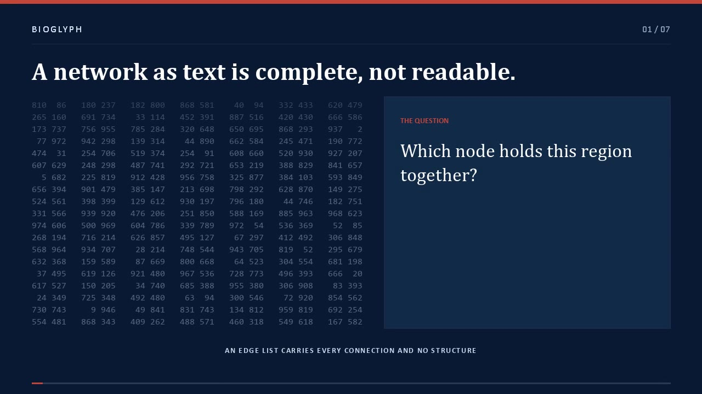

Spatial representation learning
Learn task-relevant maps of unordered tabular and molecular measurements so local structure becomes available to vision models and human inspection.
I develop learning systems that expose structure in biomedical tables, molecular networks, and single-cell data—so predictive models can also support biological reasoning.
My research connects representation learning, computational genomics, and computer vision, with applications in liquid biopsy, multimodal cancer analysis, graph learning, and single-cell biology.
My long-term goal is to build biomedical AI that does not treat representation as a fixed preprocessing choice. The model should learn or preserve biologically meaningful structure—and return its evidence in a form that researchers can examine.
Predictive performance and scientific interpretability can arise from the same representation.
Read the detailed research programLearn task-relevant maps of unordered tabular and molecular measurements so local structure becomes available to vision models and human inspection.
Use topology as a transferable language across heterogeneous networks, patient-specific molecular graphs, and large-scale biological systems.
Develop data-efficient methods for liquid biopsy and multimodal cancer analysis that remain testable under realistic clinical constraints.
Connect predictions back to genes, pathways, spatial neighborhoods, and structural counterfactuals rather than stopping at a model score.
Six connected projects explore the same central idea at different biological scales: representation is not a formatting detail—it can be the mechanism that makes learning and interpretation possible.

Learns where features belong while learning the prediction task, converting unordered clinical and molecular tables into continuous spatial maps.

Transforms very large biological graphs into image sets, giving vision models global context while making node-level evidence directly visible.

Learns a shared language of node structural roles on non-biological graphs, then transfers that topology knowledge into unseen biological networks.

Builds one pathway-structured molecular graph per patient, combining curated gene relationships with patient-specific expression for data-efficient clinical prediction.

Places co-expressed genes near one another, renders each cell as an image, and learns a reusable representation through masked-image pretraining.

Compiles a graph into named structural roles, measured evidence, and counterfactual descriptions so a frozen language model can reason about topology.
Sakib Mostafa, Yuming Jiang, James Zou, Tarik F. Massoud, Ash A. Alizadeh, Maximilian Diehn, Lei Xing, and Md Tauhidul Islam
Sakib Mostafa, James Zou, Ash A. Alizadeh, Maximilian Diehn, Lei Xing, and Md Tauhidul Islam
Sakib Mostafa, Maximilian Diehn, Ash A. Alizadeh, Lei Xing, and Md Tauhidul Islam
Yuwei Xue*, Sakib Mostafa*, James Zou, Joseph Liao, Maximilian Diehn, Ash A. Alizadeh, Lei Xing, and Md Tauhidul Islam
Ridvan Yesiloglu, Sakib Mostafa, James Zou, Ash A. Alizadeh, Jiajun Wu, Lei Xing, Ehsan Adeli, and Md Tauhidul Islam
* Equal contribution.
The workshop will be held in conjunction with MICCAI in Strasbourg.
Supporting postdoctoral research in interpretable biomedical AI.
Oral presentation in Vancouver, Canada.
Cloud support for large-scale model development and evaluation.
AACR Annual Meeting abstract 5490.
Contributing researcher on the Islam Lab project with Stanford collaborators.
Interviews and profiles on explainable AI, cancer research, and the path from deep-learning methods to high-stakes biomedical use.
A profile of my work on explainable AI and interpretable cancer-detection models at Stanford.
Read the profile ↗ CBC Canada · Video interviewA video conversation about combining imaging, genomic, and clinical information for more robust and interpretable cancer analysis and precision medicine.
Watch the CBC interview ↗ The Morning Edition — Saskatchewan, CBC Radio · October 2025A radio interview on why medical AI must be understandable—not merely accurate—before it can be trusted in cancer diagnosis.
Listen on CBC Radio ↗ University of Saskatchewan News · February 2022A research feature on opening the black box of deep learning for plant phenotyping, food security, and other high-stakes applications.
Read the feature ↗My academic work includes classroom teaching, hands-on research mentoring, and peer review across biomedical AI, computer vision, and computational biology.
University teaching across AI, computer vision, algorithms, and computing—including coordinating 13 teaching assistants for a 250-student course.
Mentoring PhD, master’s, undergraduate, and clinical research trainees in biomedical AI, single-cell biology, and graph learning.
Reviewer for MICCAI and journals and conferences spanning medical AI, computational health, deep learning, and biological data science.
I welcome conversations about faculty opportunities, research collaborations, student mentorship, and translational biomedical AI.
sakib@stanford.edu